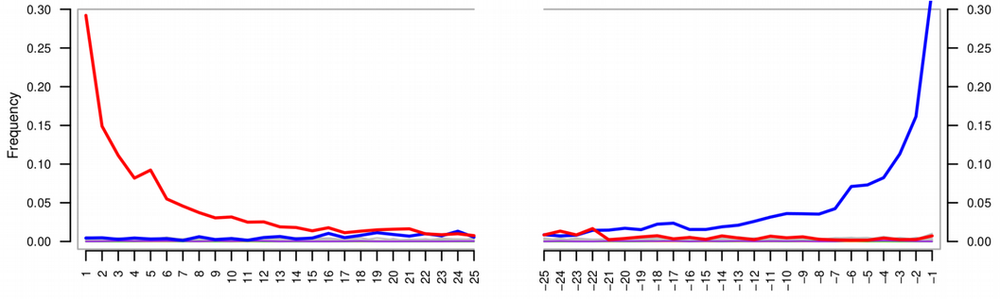

12 Authentication
For this chapter’s exercises, if not already performed, you will need to download the chapter’s dataset, decompress the archive, and create and activate the conda environment.
Do this, use wget or right click and save to download this Zenodo archive: 10.5281/zenodo.8413184, and unpack
#| eval: false
tar xvf authentication.tar.gz
cd authentication/You can then create the subsequently activate environment with
#| eval: false
conda env create -f authentication.yml
conda activate authenticationThere are additional software requirements for this chapter
Please see the relevant chapter section in Before you start before continuing with this chapter.
In ancient metagenomics we typically try to answer two questions: “Who is there?” and “How ancient?”, meaning we would like to detect an organism and investigate whether this organism is ancient. There are three typical ways to identify the presence of an organism in a metagenomic sample:
- alignment of DNA fragments to a reference genome (Bowtie, BWA, Malt etc.)
- taxonomic (kmer-based) classification of DNA fragments (Kraken, MetaPhlan, Centrifuge etc.)
- de-novo genome assembly (Megahit, metaSPAdes etc.)
The first two are reference-based, i.e. they assume a similarity of a query ancient DNA fragment to a modern reference genome in a database. This is a strong assumption, which might not be true for very old or very diverged ancient organisms. This is the case when the reference-free de-novo assembly approach becomes powerful. However, de-novo assembly has its own computational challenges for low-coverage ancient metagenomic samples that typically contain very short DNA fragments.

While all the three types of metagenomic analysis are suitable for exploring composition of metagenomic samples, they do not directly validate the findings or provide information about ancient or endogenous status of the detected orsganism. It can happen that the detected organism
- was mis-identified (the DNA belongs to another organism than initially thought),
- has a modern origin (for example, lab or sequencing contaminant)
- is of exogenous origin (for example, an ancient microbe that entered the host post-mortem).
Therefore, additional analysis is needed to follow-up each hit and demonstrate its ancient origin. Below, we describe a few steps that can help ancient metagenomic researchers to verify their findings and put them into biological context.
In this chapter, we will cover:
- how to recognize that a detected organism was mis-identified based on breadth / evenness of coverage
- how to validate findings by breadth of coverage filters via k-mer based taxonomic classification with KrakenUniq
- how to validate findings using alignments and assess mapping quality, edit distance and evenness of coverage profile
- how to detect modern contaminants via deamination profile, DNA fragmentation and post-mortem damage (PMD) scores
- how negative (blank) controls can help disentangle ancient organisms from modern contaminants
- how microbial source tracking can facilitate separating endogenous and exogenous microbial communities
The chapter has the following outline:
- Introduction
- Simulated ancient metagenomic data
- Genomic hit confirmation (how we see a true-positive hit)
- Modern validation criteria
- evenness and breadth of coverage
- alignment quality (edit distance, mapq)
- affinity to reference (percent identity, multi-allelic SNPs)
- Ancient-specific validation
- deamination profile (PMD scores)
- DNA fragmentation
- Modern validation criteria
- Microbiome contamination correction
- Decontamination via negative controls (blanks)
- Similarity to expected microbiome source (microbial source tracking)
12.1 Simulated ancient metagenomic data
In this chapter, we will use 10 pre-simulated metagenomics with gargammel ancient metagenomic samples from Pochon et al. (2022).

The raw simulated data can be accessed via https://doi.org/10.17044/scilifelab.21261405
To download the simulated ancient metagenomic data please use the following command lines:
#| eval: false
mkdir ameta/ && cd ameta/
wget https://figshare.scilifelab.se/ndownloader/articles/21261405/versions/1 \
&& unzip 1 && rm 1The DNA reads were simulated with damage, sequencing errors and Illumina adapters, therefore one will have to trim the adapters first:
#| eval: false
for i in $(ls *.fastq.gz)
do
sample_name=$(basename $i .fastq.gz)
cutadapt -a AGATCGGAAGAG --minimum-length 30 -o ${sample_name}.trimmed.fastq.gz ${sample_name}.fastq.gz -j 4
doneNow, after the basic data pre-processing has been done, we can proceed with validation, authentication and decontamination analyses.
In here you will see a range of directories, each representing different parts of this tutorial. One set of trimmed ‘simulated’ reads from Pochon et al. (2022) in rawdata/.
12.2 Genomic hit confirmation
Once an organism has been detected in a sample (via alignment, classification or de-novo assembly), one needs to take a closer look at multiple quality metrics in order to reliably confirm that the organism is not a false-positive detection and is of ancient origin. The methods used for this purpose can be divided into modern validation and ancient-specific validation criteria. Below, we will cover both of them.
12.3 Modern genomic hit validation criteria
The modern validation methods aim at confirming organism presence regardless of its ancient status. The main approaches include evenness / breadth of coverage computation, assessing alignment quality, and monitoring affinity of the DNA reads to the reference genome of the potential host.
12.3.1 Depth vs breadth and evenness of coverage
Concluding organism presence by relying solely on the numbers of assigned sequenced reads (aka depth of coverage metric) turns out to be not optimal and too permissive, which may result in a large amount of false-positive discoveries. For example, when using alignment to a reference genome, the mapped reads may demonstrate non-uniform coverage as visualized in the Integrative Genomics Viewer (IGV) below.
In this case, DNA reads originating from another microbe were (mis-)aligned to Yersina pestis reference genome. It can be observed that a large number the reads align only to a few conserved genomic loci. Therefore, even if many thousands of DNA reads are capable of aligning to the reference genome, the overall uneven alignment pattern suggests no presence of Yersina pestis in the metagenomic sample. Thus, not only the number of assigned reads (proportional to depth of coverage metric) but also the breadth and evenness of coverage metrics become of particular importance for verification of metagenomic findings, i.e. hits with DNA reads uniformly aligned across the reference genome are more likely to be true-positive detections (Figure 12.3).

In the next sections, we will show how to practically compute the breadth and evenness of coverage via KrakenUniq and Samtools.
12.3.2 Breadth of coverage via KrakenUniq
Here we are going to demonstrate that one can assess breadth of coverage information already at the taxonomic profiling step. Although taxonomic classifiers do not perform alignment, some of them, such as KrakenUniq and Kraken2 provide a way to infer breadth of coverage in addition to the number of assigned reads to a taxon. This allows for immediate filtering out a lot of false positive hits. Since Kraken-family classifiers are typically faster and less memory-demanding, i.e. can work with very large reference databases, compared to genome aligners, they provide a robust and fairly unbiased initial taxonomic profiling, which can still later be followed-up with proper alignment and computing evenness of coverage as described above.
⚠️ This step will require large amounts of memory and CPUs!, so if running yourself please note this step is better suited for a server, HPC cluster, or the cloud rather than on a laptop!
To profile the data with KrakenUniq one needs a database, a pre-built complete microbial NCBI RefSeq database can be accessed via https://doi.org/10.17044/scilifelab.21299541.
Please use the following command line to download the database:
#| eval: false
cd krakenuniq/ ## If you've left it...
wget https://figshare.scilifelab.se/ndownloader/articles/21299541/versions/1 \
&& unzip 1 && rm 1The following example command is how you would execute KrakenUniq.
#| eval: false
for i in $(ls *.trimmed.fastq.gz)
do
krakenuniq --db KRAKENUNIQ_DB --fastq-input $i --threads 20 \
--classified-out ${i}.classified_sequences.krakenuniq \
--unclassified-out ${i}.unclassified_sequences.krakenuniq \
--output ${i}.sequences.krakenuniq --report-file ${i}.krakenuniq.output
doneTaxonomic k-mer-based classification of the ancient metagenomic reads can be done via KrakenUniq. However as this requires a very large database file, the results from running KrakenUniq on the 10 simulated genomes can be found in.
#| eval: false
cd krakenuniq/KrakenUniq by default delivers a proxy metric for breadth of coverage called the number of unique kmers (in the 4th column of its output table) assigned to a taxon. KrakenUniq output can be easily filtered with respect to both depth and breadth of coverage, which substantially reduces the number of false-positive hits.

We can filter the KrakenUniq output with respect to both depth (taxReads) and breadth (kmers) of coverage with the following custom Python script, which selects only species with at east 200 assigned reads and 1000 unique k-mers. After the filtering, we can see a Yersinia pestis hit in the sample 10 that possess the filtering thresholds with respect to both depth and breadth of coverage.
Run this from within the krakenuniq/ directory.
#| eval: false
for i in $(ls *.krakenuniq.output)
do
../scripts/filter_krakenuniq.py $i 1000 200 ../scripts/pathogensfound.very_inclusive.tab
done
We can also easily produce a KrakenUniq taxonomic abundance table krakenuniq_abundance_matrix.txt using the custom R script below, which takes as argument the contents of the krakenuniq/ folder containing the KrakenUniq output files.
#| eval: false
Rscript ../scripts/krakenuniq_abundance_matrix.R . krakenuniq_abundance_matrix/ 1000 200From the krakenuniq_abundance_matrix.txt table inside the resulting directory, it becomes clear that Yersinia pestis seems to be present in a few other samples in addition to sample 10.

While KrakenUniq delivers information about breadth of coverage by default, you can also get this information from Kraken2.
For this one has to use a special flag –report-minimizer-data when running Kraken2 in order to get the breadth of coverage proxy which is called the number of distinct minimizers for the case of Kraken2. Below, we provide an example Kraken2 command line containing the distinct minimizer flag:
#| eval: false
DBNAME=Kraken2_DB_directory
KRAKEN_INPUT=sample.fastq.gz
KRAKEN_OUTPUT=Kraken2_output_directory
kraken2 --db $DBNAME --fastq-input $KRAKEN_INPUT --threads 20 \
--classified-out $KRAKEN_OUTPUT/classified_sequences.kraken2 \
--unclassified-out $KRAKEN_OUTPUT/unclassified_sequences.kraken2 \
--output $KRAKEN_OUTPUT/sequences.kraken2 \
--report $KRAKEN_OUTPUT/kraken2.output \
--use-names --report-minimizer-dataThen the filtering of Kraken2 output with respect to breadth and depth of coverage can be done by analogy with filtering KrakenUniq output table. In case of de-novo assembly, the original DNA reads are typically aligned back to the assembled contigs, and the evenness / breadth of coverage can be computed from these alignments.
12.3.3 Evenness of coverage via Samtools
Now, after we have detected an interesting Y. pestis hit, we would like to follow it up, and compute multiple quality metrics (including proper breadth and evenness of coverage) from alignments (Bowtie2 aligner will be used in our case) of the DNA reads to the Y. pestis reference genome. Below, we download Yersinia pestis reference genome from NCBI, build its Bowtie2 index, and align trimmed reads against Yersinia pestis reference genome with Bowtie2. Do not forget to sort and index the alignments as it will be important for computing the evenness of coverage. It is also recommended to remove multi-mapping reads, i.e. the ones that have MAPQ = 0, at least for Bowtie and BWA aligners that are commonly used in ancient metagenomics. Samtools with -q flag can be used to extract reads with MAPQ > = 1.
#| eval: false
cd /<path/<to>/authentication/bowtie2
## Download reference genome
NCBI=https://ftp.ncbi.nlm.nih.gov; ID=GCF_000222975.1_ASM22297v1
wget $NCBI/genomes/all/GCF/000/222/975/${ID}/${ID}_genomic.fna.gz#| eval: false
cd /<path/<to>/authentication/bowtie2
## Prepare reference genome and build Bowtie2 index
gunzip GCF_000222975.1_ASM22297v1_genomic.fna.gz; echo NC_017168.1 > region.bed
seqtk subseq GCF_000222975.1_ASM22297v1_genomic.fna region.bed > NC_017168.1.fasta
bowtie2-build --large-index NC_017168.1.fasta NC_017168.1.fasta --threads 10
## Run alignment of raw reads against FASTQ
bowtie2 --large-index -x NC_017168.1.fasta --end-to-end --threads 10 \
--very-sensitive -U ../rawdata/sample10.trimmed.fastq.gz | samtools view -bS -h -q 1 \
-@ 20 - > Y.pestis_sample10.bam
## Sort and index BAM files for rapid access in downstream commands
samtools sort Y.pestis_sample10.bam -@ 10 > Y.pestis_sample10.sorted.bam
samtools index Y.pestis_sample10.sorted.bamNext, the breadth / evenness of coverage can be computed from the BAM-alignments via samtools depth as follows:
#| eval: false
samtools depth -a Y.pestis_sample10.sorted.bam > Y.pestis_sample10.sorted.bocand visualized using for example the following R code snippet (alternatively aDNA-BAMPlotter can be used).
Load R by running R in your terminal
#| eval: false
RNote the following may take a minute or so to run.
# Read output of samtools depth commans
df <- read.delim("Y.pestis_sample10.sorted.boc", header = FALSE, sep = "\t")
names(df) <- c("Ref", "Pos", "N_reads")
# Split reference genome in tiles, compute breadth of coverage for each tile
N_tiles <- 500
step <- (max(df$Pos) - min(df$Pos)) / N_tiles
tiles <- c(0:N_tiles) * step; boc <- vector()
for(i in 1:length(tiles))
{
df_loc <- df[df$Pos >= tiles[i] & df$Pos < tiles[i+1], ]
boc <- append(boc, rep(sum(df_loc$N_reads > 0) / length(df_loc$N_reads),
dim(df_loc)[1]))
}
boc[is.na(boc)]<-0; df$boc <- boc
plot(df$boc ~ df$Pos, type = "s", xlab = "Genome position", ylab = "Coverage")
abline(h = 0, col = "red", lty = 2)
mtext(paste0(round((sum(df$N_reads > 0) / length(df$N_reads)) * 100, 2),
"% of genome covered"), cex = 0.8)Once finished examining the plot you can quit R
#| eval: false
## Press 'n' when asked if you want to save your workspace image.
quit()In the R script above, we simply split the reference genome into N_tiles tiles and compute the breadth of coverage (number of reference nucleotides covered by at least one read normalized by the total length) locally in each tile. By visualizing how the local breadth of coverage changes from tile to tile, we can monitor the distribution of the reads across the reference genome. In the evenness of coverage figure above, the reads seem to cover all parts of the reference genome uniformly, which is a good evidence of true-positive detection, even though the total mean breadth of coverage is low due to the low total number of reads.
12.3.4 Alignment quality
In addition to evenness and breadth of coverage, it is very informative to monitor how well the metagenomic reads map to a reference genome. Here one can control for mapping quality (MAPQ field in the BAM-alignments) and the number of mismatches for each read, i.e. edit distance.
Mapping quality (MAPQ) can be extracted from the 5th column of BAM-alignments using Samtools and cut command in bash.
#| eval: false
samtools view Y.pestis_sample10.sorted.bam | cut -f5 > mapq.txtThen the 5th column of the filtered BAM-alignment can be visualized via a simple histogram in R as below for two random metagenomic samples.
Load R
#| eval: false
RAnd generate the histogram with.
hist(as.numeric(readLines("mapq.txt")), col = "darkred", breaks = 100)Note that MAPQ scores are computed slightly differently for Bowtie and BWA, so they are not directly comparable, however, for both MAPQ ~ 10-30, as in the histograms below, indicates good affinity of the DNA reads to the reference genome. here we provide some examples of how typical MAPQ histograms for Bowtie2 and BWA alignments can look like:

Edit distance can be extracted by gathering information in the NM-tag inside BAM-alignments, which reports the number of mismatches for each aligned read. This can be done either in bash / awk, or using handy functions from Rsamtools R package:
library("Rsamtools")
param <- ScanBamParam(tag = "NM")
bam <- scanBam("Y.pestis_sample10.sorted.bam", param = param)
barplot(table(bam[[1]]$tag$NM), ylab="Number of reads", xlab="Number of mismatches")Once finished examining the plot you can quit R.
#| eval: false
## Press 'n' when asked if you want to save your workspace image.
quit()
In the barplot above we can see that the majority of reads align either without or with very few mismatches, which is an evidence of high affinity of the aligned reads with respect to the reference genome. For a true-positive finding, the edit distance barplot typically has a decreasing profile. However, for a very degraded DNA, it can have a mode around 1 or 2, which can also be reasonable. A false-positive hit would have a mode of the edit distance barplot shifted toward higher numbers of mismatches.
12.3.5 Affinity to reference
Very related to edit distance is another alignment validation metric which is called percent identity. It represents a barplot demonstrating the numbers of reads that are 100% identical to the reference genome (i.e. map without a single mismatch), 99% identical, 98% identical etc. Misaligned reads originating from another related organism have typically most reads with percent identity of 93-96%. In the figure below, the panels (c–e) demonstrate different percent identity distributions. In panel c, most reads show a high similarity to the reference, which indicates a correct assignment of the reads to the reference. In panel d, most reads are highly dissimilar to the reference, which suggests that they originate from different related species. In some cases, as in panel e, a mixture of correctly assigned and misassigned reads can be observed.
Another important way to detect reads that cross-map between related species is haploidy or checking the amount of multi-allelic SNPs. Because bacteria are haploid organisms, only one allele is expected for each genomic position. Only a small number of multi-allelic sites are expected, which can result from a few mis-assigned or incorrectly aligned reads. In the figure above, panels (f–i) demonstrate histograms of SNP allele frequency distributions. Panel f demonstrates the situation when we have only a few multi-allelic sites originating from a misaligned reads. This is a preferable case scenario corresponding to correct assignment of the reads to the reference. Please also check the corresponding “Good alignments” IGV visualization to the right in the figure above.
In contrast, a large number of multi-allelic sites indicates that the assigned reads originate from more than one species or strain, which can result in symmetric allele frequency distributions (e.g., if two species or strains are present in equal abundance) (panel g) or asymmetric distributions (e.g., if two species or strains are present in unequal abundance) (panel h). A large number of mis-assigned reads from closely related species can result in a large number of multi-allelic sites with low frequencies of the derived allele (panel i). The situations (g-i) correspond to incorrect assignment of the reads to the reference. Please also check the corresponding “Bad alignments” IGV visualization to the right in the figure above.
12.4 Ancient-specific genomic hit validation criteria
In contrast to modern genomic hit validation criteria, the ancient-specific validation methods concentrate on DNA degradation and damage pattern as ultimate signs of ancient DNA. Below, we will discuss deamination profile, read length distribution and post mortem damage (PMD) scores metrics that provide good confirmation of ancient origin of the detected organism.
12.4.1 Degradation patterns
Checking evenness of coverage and alignment quality can help us to make sure that the organism we are thinking about is really present in the metagenomic sample. However, we still need to address the question “How ancinet?”. For this purpose we need to compute deamination profile and read length distribution of the aligned reads in order to prove that they demonstrate damage pattern and are sufficiently fragmented, which would be a good evidence of ancient origin of the detected organisms.
Deamination profile of a damaged DNA demonstrate an enrichment of C / T polymorphisms at the ends of the reads compared to all other single nucleotide substitutions. There are several tools for computing deamination profile, but perhaps the most popular is mapDamage. The tool can be run using the following command line, still in the authentication/bowtie2/ directory:
#| eval: false
mapDamage -i Y.pestis_sample10.sorted.bam -r NC_017168.1.fasta -d mapDamage_results/ --merge-reference-sequences --no-stats
maDamage delivers a bunch of useful statistics, among other read length distribution can be checked. A typical mode of DNA reads should be within a range 30-70 base-pairs in order to be a good evidence of DNA fragmentation. Reads longer tha 100 base-pairs are more likely to originate from modern contamination.
Another useful tool that can be applied to assess how DNA is damaged is PMDtools which is a maximum-likelihood probabilistic model that calculates an ancient score, PMD score, for each read. The ability of PMDtools to infer ancient status with a single read resolution is quite unique and different from mapDamage that can only assess deamination based on a number of reads. PMD scores can be computed using the following command line, please note that Python2 is needed for this purpose.
#| eval: false
samtools view -h Y.pestis_sample10.bam | pmdtools --printDS > PMDscores.txtThe distribution of PMD scores can be visualized via a histogram in R as follows.
Load R.
RThen generate the histogram.
pmd_scores <- read.delim("PMDscores.txt", header = FALSE, sep = "\t")
hist(pmd_scores$V4, breaks = 1000, xlab = "PMDscores")Once finished examining the plot you can quit R
#| eval: false
## Press 'n' when asked if you want to save your workspace image.
quit()
Typically, reads with PMD scores greater than 3 are considered to be reliably ancient, i.e. damaged, and can be extracted for taking a closer look. Therefore PMDtools is great for separating ancient reads from modern contaminant reads.
As mapDamage, PMDtools can also compute deamination profile. However, the advantage of PMDtools that it can compute deamination profile for UDG / USER treated samples (with the flag –CpG). For this purpose, PMDtools uses only CpG sites which escape the treatment, so deamination is not gone completely and there is a chance to authenticate treated samples. Computing deamination pattern with PMDtools can be achieved with the following command line (please note that the scripts pmdtools.0.60.py and plotPMD.v2.R can be downloaded from the github repository here https://github.com/pontussk/PMDtools):
#| eval: false
samtools view Y.pestis_sample10.bam | pmdtools --platypus > PMDtemp.txtWe can then run simple R commands directly from the terminal (without loading R itself with) the following.
#| eval: false
R CMD BATCH plotPMD
When performing ancient status analysis on de-novo assembled contigs, it can be computationally challenging and time consuming to run mapDamage or PMDtools on all of them as there can be hundreds of thousands contigs. In addition, the outputs from mapDamage and PMDtools lacking a clear numeric quantity or a statistical test that could provide an “ancient vs. non-ancient” decision for each de-novo assembled contig. To address these limitations, pyDamage tool was recently developed. PyDamage evaluates the amount of aDNA damage and tests the hypothesis whether a model assuming presence of aDNA damage better explains the data than a null model.
pyDamage can be run on a sorted BAM-alignments of the microbial reads to the de-novo assembled contigs using the following command line:
#| eval: false
pydamage analyze -w 30 -p 14 filtered.sorted.bam12.5 Recommended Reading
Clio Der Sarkissian, Irina M. Velsko, Anna K. Fotakis, Åshild J. Vågene, Alexander Hübner, and James A. Fellows Yates, Ancient Metagenomic Studies: Considerations for the Wider Scientific Community, mSystems 2021 Volume 6 Issue 6 e01315-21.
Warinner C, Herbig A, Mann A, Fellows Yates JA, Weiß CL, Burbano HA, Orlando L, Krause J. A Robust Framework for Microbial Archaeology. Annu Rev Genomics Hum Genet. 2017 Aug 31;18:321-356. doi: 10.1146/annurev-genom-091416-035526. Epub 2017 Apr 26. PMID: 28460196; PMCID: PMC5581243.
Orlando, L., Allaby, R., Skoglund, P. et al. Ancient DNA analysis. Nat Rev Methods Primers 1, 14 (2021). https://doi.org/10.1038/s43586-020-00011-0
12.6 Resources
KrakenUniq: Breitwieser, F. P., Baker, D. N., & Salzberg, S. L. (2018). KrakenUniq: confident and fast metagenomics classification using unique k-mer counts. Genome Biology, vol. 19(1), p. 1–10. http://www.ec.gc.ca/education/default.asp?lang=En&n=44E5E9BB-1
Samtools: Heng Li, Bob Handsaker, Alec Wysoker, Tim Fennell, Jue Ruan, Nils Homer, Gabor Marth, Goncalo Abecasis, Richard Durbin, 1000 Genome Project Data Processing Subgroup, The Sequence Alignment/Map format and SAMtools, Bioinformatics, Volume 25, Issue 16, 15 August 2009, Pages 2078–2079, https://doi.org/10.1093/bioinformatics/btp352
PMDtools: Skoglund P, Northoff BH, Shunkov MV, Derevianko AP, Pääbo S, Krause J, Jakobsson M. Separating endogenous ancient DNA from modern day contamination in a Siberian Neandertal. Proc Natl Acad Sci U S A. 2014 Feb 11;111(6):2229-34. doi: 10.1073/pnas.1318934111. Epub 2014 Jan 27. PMID: 24469802; PMCID: PMC3926038.
pyDamage: Borry M, Hübner A, Rohrlach AB, Warinner C. PyDamage: automated ancient damage identification and estimation for contigs in ancient DNA de novo assembly. PeerJ. 2021 Jul 27;9:e11845. doi: 10.7717/peerj.11845. PMID: 34395085; PMCID: PMC8323603.
SourceTracker: Knights D, Kuczynski J, Charlson ES, Zaneveld J, Mozer MC, Collman RG, Bushman FD, Knight R, Kelley ST. Bayesian community-wide culture-independent microbial source tracking. Nat Methods. 2011 Jul 17;8(9):761-3. doi: 10.1038/nmeth.1650. PMID: 21765408; PMCID: PMC3791591.
deCOM: https://www.biorxiv.org/content/10.1101/2023.01.26.525439v1, doi: https://doi.org/10.1101/2023.01.26.525439
aMeta: https://www.biorxiv.org/content/10.1101/2022.10.03.510579v1, doi: https://doi.org/10.1101/2022.10.03.510579
Bowtie2: Langmead, B., Salzberg, S. Fast gapped-read alignment with Bowtie 2. Nat Methods 9, 357–359 (2012). https://doi.org/10.1038/nmeth.1923
cuperdec: https://cran.r-project.org/web/packages/cuperdec/index.html
decontam: https://www.bioconductor.org/packages/release/bioc/html/decontam.html